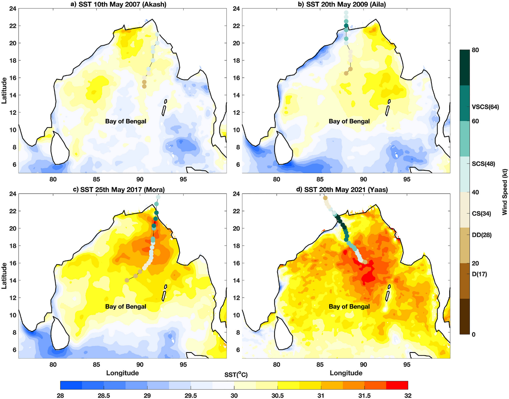
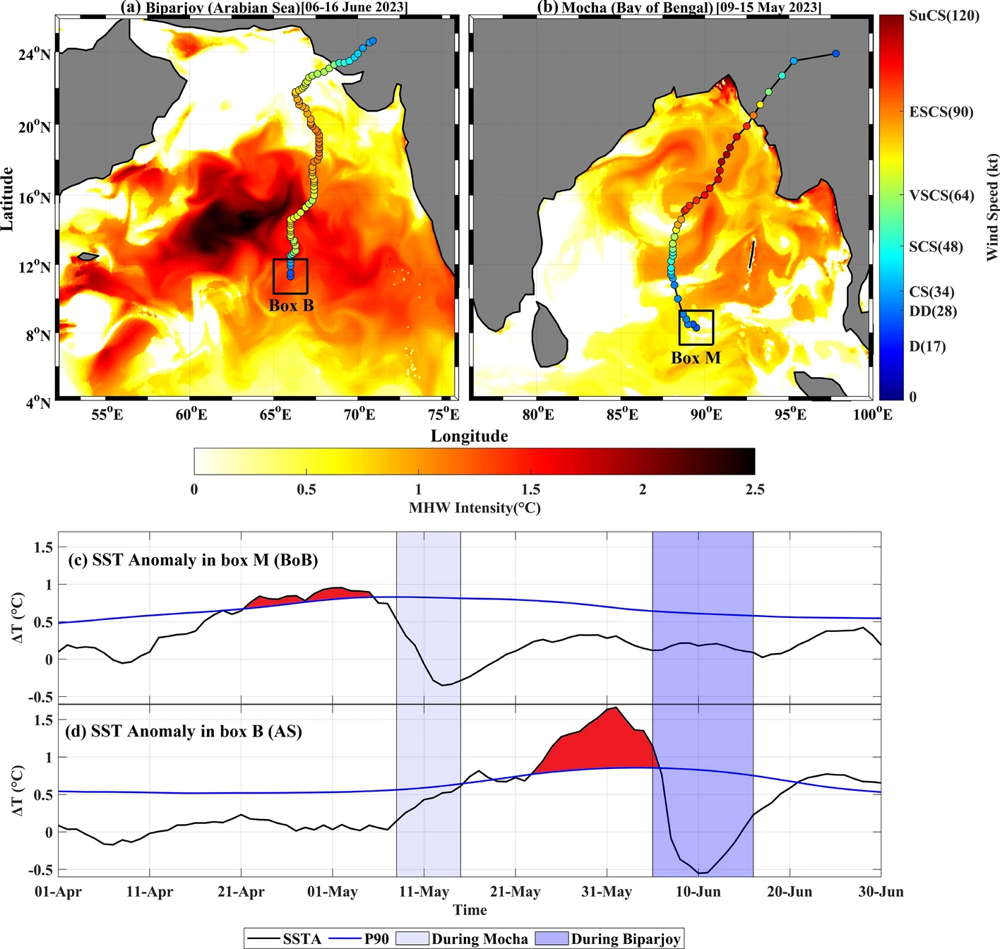
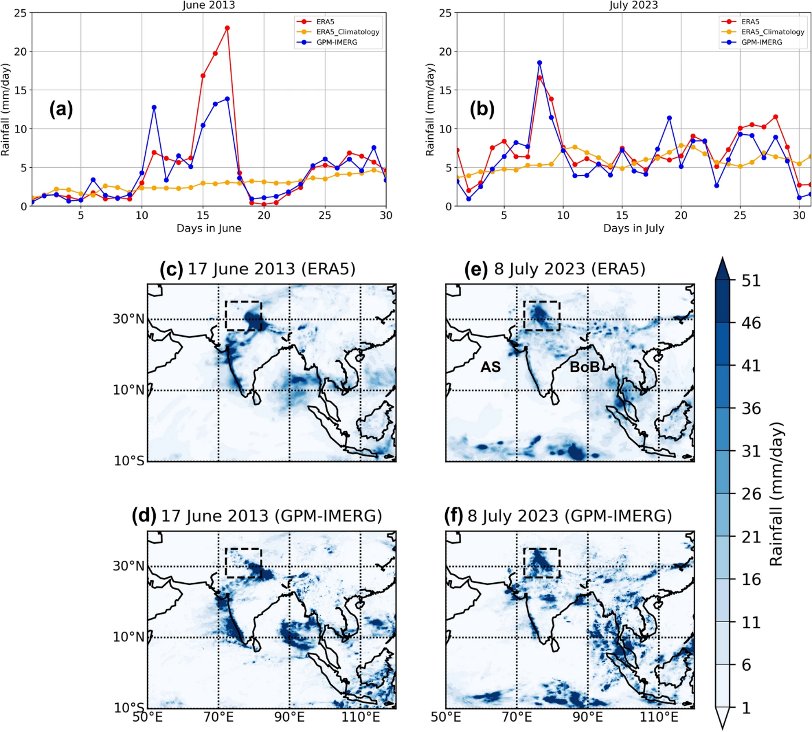

← Back to all research areas
Overview
Climate extremes across the Indian subcontinent and surrounding oceans are increasingly driven by anomalous thermodynamic and dynamic shifts within the coupled ocean-atmosphere system. Tracking these extremes reveals how sustained marine heatwaves and unusual subsurface ocean warming rapidly intensify pre-monsoon tropical cyclones, while complex atmospheric interactions — such as the coupling of subpolar and subtropical jet streams — trigger devastating inland rainfall events. Ultimately, these phenomena highlight a shifting regional baseline where isolated weather systems are continuously amplified by persistent, large-scale warming patterns.
Focus Areas
- Analysis of how anomalous surface warming, severe marine heatwaves, and subsurface heat content directly drive the rapid intensification of pre-monsoon tropical cyclones.
- Evaluation of the thermodynamic impact of low-salinity plumes and barrier layers on the accumulation of Tropical Cyclone Heat Potential prior to cyclogenesis.
- Tracking the complex interactions and anomalous coupling between subpolar and subtropical jet streams in the upper atmosphere.
- Investigation of how these shifting jet stream dynamics triggered unprecedented extreme and localized rainfall events over the North Indian Subcontinent.
- Analysis of the atmospheric mechanisms, including sustained anti-cyclonic circulation and subsidence, that reinforce and prolong extreme marine heatwave events.
- Quantification of how long-term environmental warming trends compound with short-term synoptic anomalies to escalate overall regional disaster severity.
Interesting Results

The distribution of Sea Surface Temperature on 3 days prior to cyclogenesis for all four cyclones (a) Akash (b) Alia (c) Mora (d) Yaas. The track-based color bar (green-brown) indicates the intensity of cyclones.
Read More

The spatial distribution of average MHW intensity during the pre-cyclone period of the cyclone (a) Biparjoy in the Arabian Sea (27th May to 05th June 2023) and (b) Mocha in the Bay of Bengal (29th April to 08th May 2023). The tracks of both cyclones are shown by scatter points with color marking the intensity.
Read More

Time series of daily accumulated precipitation (mm/day) averaged over North Indian Subcontinent (27°N–36°N, 72°E–83°E) during (a) June 2013 and (b) July 2023, along with the ERA5 daily accumulated rainfall climatology (orange line). Climatology based on data from 1991 to 2010.
Read More
Why It Matters
Understanding the precise physical drivers behind rapidly intensifying cyclones, severe precipitation anomalies, and prolonged heatwaves is essential for accurate extreme weather forecasting. As continuous warming alters the thermal limits of the ocean and the trajectory of atmospheric jet streams, these insights provide the critical framework needed to upgrade early warning systems and protect vulnerable populations from compounding disasters.